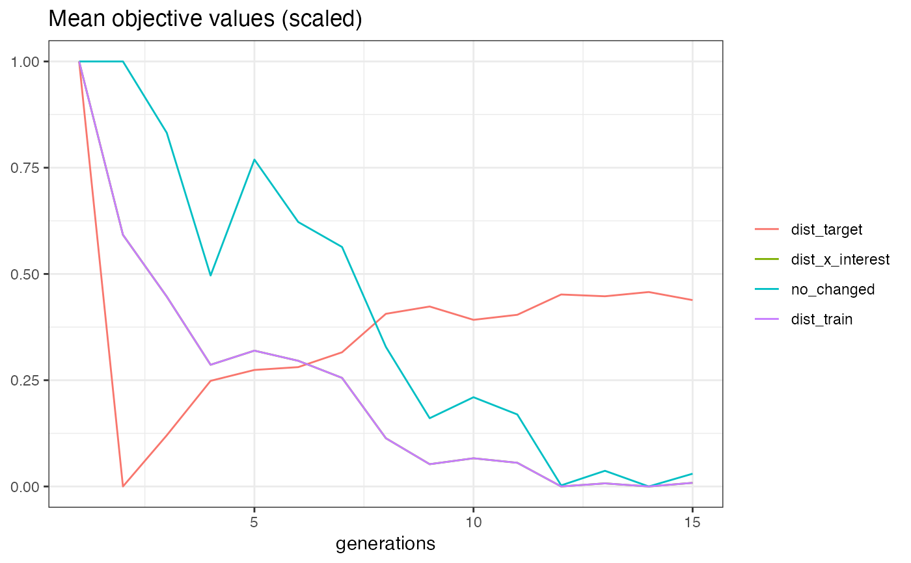
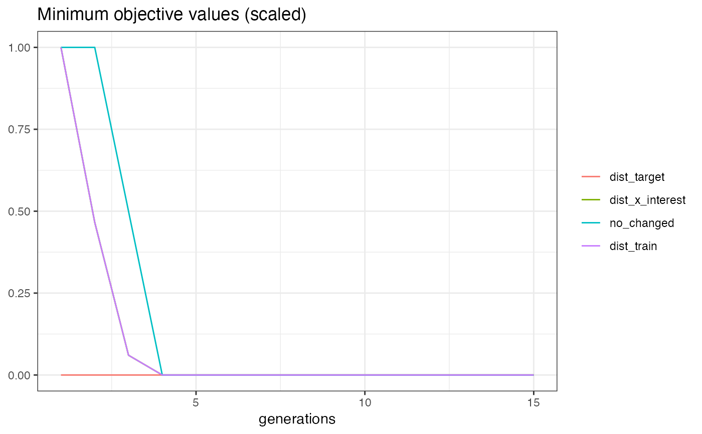

R/MOCRegr.R
MOCRegr.RdMOC (Dandl et. al 2020) solves a multi-objective optimization problem to find counterfactuals. The four objectives
to minimize are:
Distance between x_interest and desired_prob
Distance between x_interest and a candidate
Number of feature changes
(Weighted) average distance between a candidate and its k nearest observed data points
For optimization it uses the NSGA II algorithm (Deb et. al 2002) with mixed integer evolutionary strategies by Li et al. (2013).
Several population initialization strategies are available:
random: Sample from numerical feature ranges and discrete feature values from predictor$data$X.
Some features values are randomly reset to the values of x_interest.
icecurve: Sample from numerical feature ranges and discrete feature values from predictor$data$X.
The higher the ICE curve variance of a feature, the lower the probability that
values of this feature are reset to the values of x_interest.
sd: Sample from numerical feature ranges that are limited by the feature standard deviations extracted
from predictor$data$X. For non-numerical features, the random strategy is used.
Some features values are randomly reset to the values of x_interest.
traindata: Initializes the first population using observations from predictor$data$X that are nondominated.
Some features values are randomly reset to the values of x_interest. If not enough nondominated observations are found,
remaining individuals are created using the random strategy.
The R package miesmuschel implements the mixed integer evolutionary strategies.
To compute dissimilarities, the function uses Gower's dissimilarity measure (Gower, 1990),
which is implemented in the gower.dist.
Dandl, Susanne, Christoph Molnar, Martin Binder, and Bernd Bischl. 2020. “Multi-Objective Counterfactual Explanations.” In Parallel Problem Solving from Nature – PPSN XVI, edited by Thomas Bäck, Mike Preuss, André Deutz, Hao Wang, Carola Doerr, Michael Emmerich, and Heike Trautmann, 448–69. Cham: Springer International Publishing.
Deb, K., Pratap, A., Agarwal, S., & Meyarivan, T. A. M. T. (2002). A fast and elitist multiobjective genetic algorithm: NSGA-II. IEEE transactions on evolutionary computation, 6(2), 182-197.
Gower, J. C. (1971), "A general coefficient of similarity and some of its properties". Biometrics, 27, 623–637.
R. Li et al., "Mixed Integer Evolution Strategies for Parameter Optimization," in Evolutionary Computation, vol. 21, no. 1, pp. 29-64, March 2013, doi: 10.1162/EVCO_a_00059.
counterfactuals::CounterfactualMethod -> counterfactuals::CounterfactualMethodRegr -> MOCRegr
optimizer(OptimInstanceMultiCrit)
The object used for optimization.
new()Create a new MOCRegr object.
MOCRegr$new( predictor, epsilon = NULL, fixed_features = NULL, max_changed = NULL, mu = 20L, n_generations = 175L, p_rec = 0.57, p_rec_gen = 0.85, p_rec_use_orig = 0.88, p_mut = 0.79, p_mut_gen = 0.56, p_mut_use_orig = 0.32, k = 1L, weights = NULL, lower = NULL, upper = NULL, init_strategy = "random", use_conditional_mutator = FALSE )
predictor(Predictor)
The object (created with iml::Predictor$new()) holding the machine learning model and the data.
epsilon(numeric(1) | NULL)
If not NULL, candidates whose prediction is further away from the desired prediction than epsilon are penalized.
Default is NULL, which means no penalization
fixed_features(character() | NULL)
Names of features that are not allowed to change. NULL (default) allows to change all features.
max_changed(integerish(1) | NULL)
Maximum number of feature changes. NULL (default) allows any number of changes.
mu(integerish(1))
The population size. Default is 20L.
n_generations(integerish(1))
The number of generations. Default is 175L.
p_rec(numeric(1))
Probability with which an individualdevt is chosen for recombination. Default is 0.57.
p_rec_gen(numeric(1))
Probability with which a feature/gene is chosen for recombination. Default is 0.85.
p_rec_use_orig(numeric(1))
Probability with which a feature/gene is reset to the feature value of x_interest after recombination. Default is 0.88.
p_mut(numeric(1))
Probability with which an individual is chosen for mutation. Default is 0.79.
p_mut_gen(numeric(1))
Probability with which a feature/gene is chosen for mutation. Default is 0.56.
p_mut_use_orig(numeric(1))
Probability with which a feature/gene is reset to the feature value of x_interest after mutation. Default is 0.32.
k(integerish(1))
The number of nearest neighbors to use for the forth objective. Default is 1L.
weights(numeric(1) | numeric(k) | NULL)
The weights used to compute the weighted average distance for the forth objective. It is either a single value
or a vector of length k. If it has length k, the first value corresponds to the nearest neighbor and so on.
The values should sum up to 1. Default is NULL which means all neighbors are weighted equally.
lower(numeric() | NULL)
Vector of minimum values for numeric features. If not NULL, it should be named with the corresponding feature names.
If NULL (default) lower is taken for each numeric feature as its minimum value in predictor$data$X.
upper(numeric() | NULL)
Vector of maximum values for numeric features. If not NULL, it should be named with the corresponding feature names.
If NULL (default) upper is taken for each numeric feature as its maximum value in predictor$data$X.
init_strategy(character(1))
The population initialization strategy. Can be random (default), sd, icecurve or traindata. For more information,
see the details section.
use_conditional_mutator(logical(1))
Should a conditional mutator be used? The conditional mutator generates plausible feature values conditional
on the values of the other feature. Default is FALSE.
plot_statistics()Plots the evolution of the mean and minimum objective values together with the dominated hypervolume over
the generations. All values for a generation are calculated based on all nondominated individuals of that generation.
For computing the dominated hypervolume the miesmuschel:::domhv function is used.
MOCRegr$plot_statistics(centered_obj = TRUE)
centered_obj(logical(1))
Should the objective values be centered? If set to FALSE, each objective value is visualized in a separate plot,
since they (usually) have different scales. If set to TRUE (default), they are visualized in a single plot.
get_dominated_hv()Calculates the dominated hypervolume of each generation.
The miesmuschel:::domhv function is used for this.
MOCRegr$get_dominated_hv()
A data.table with the dominated hypervolume of each generation
plot_search()Visualizes all individuals of all generations in a scatter plot with two objectives on the axes.
MOCRegr$plot_search(objectives = c("dist_target", "dist_x_interest"))
objectives(character(2))
The two objectives to be shown in the plot. Possible values are: "dist_target", "dist_x_interest, "nr_changed"
and "dist_train".
clone()The objects of this class are cloneable with this method.
MOCRegr$clone(deep = FALSE)
deepWhether to make a deep clone.
if (require("randomForest")) { # Train a model rf = randomForest(mpg ~ ., data = mtcars) # Create a predictor object predictor = iml::Predictor$new(rf) # Find counterfactuals moc_regr = MOCRegr$new(predictor, n_generations = 30L) cfactuals = moc_regr$find_counterfactuals(x_interest = mtcars[1L, ], desired_outcome = c(22, 26)) # Print the results cfactuals$data # Plot evolution moc_regr$plot_statistics() }#>#> [[1]]#> #> [[2]]#> #> [[3]]#>